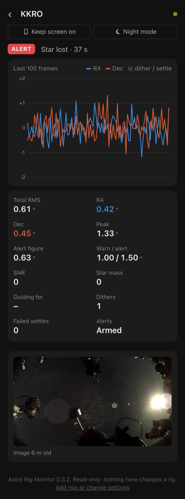
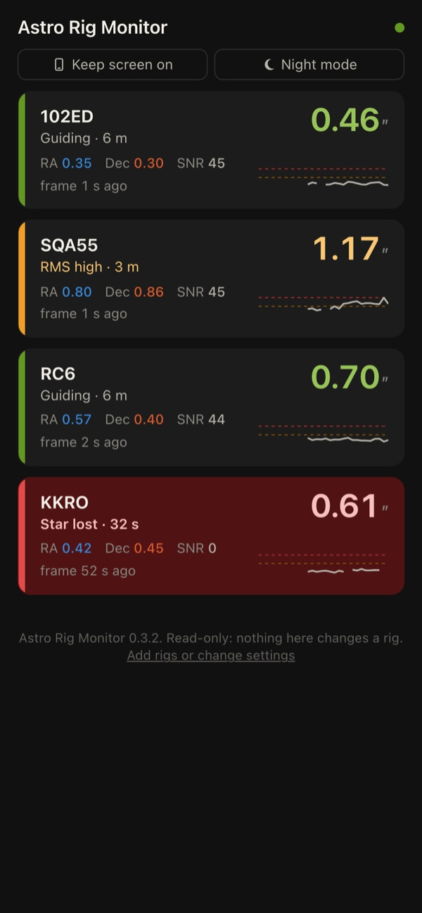
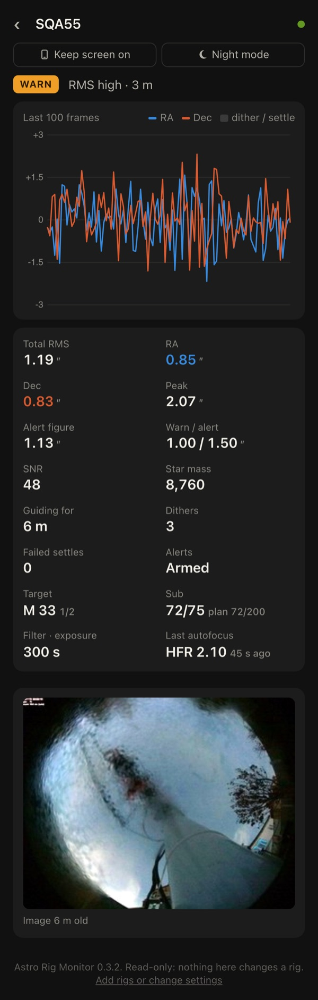
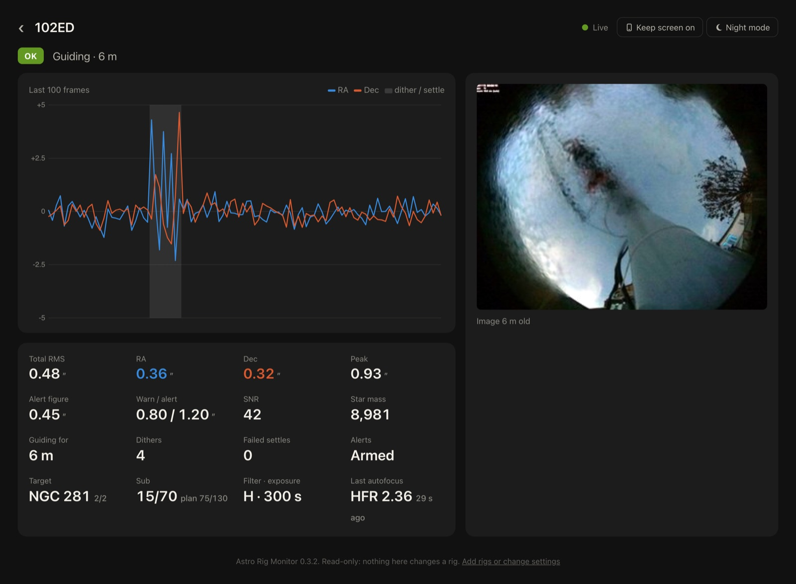
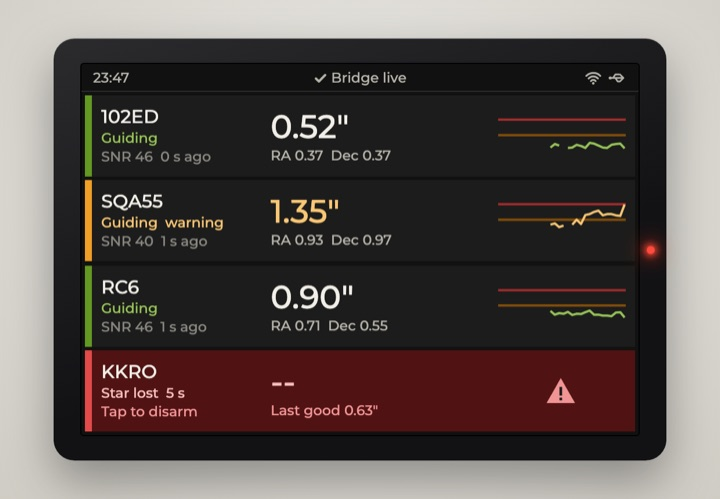
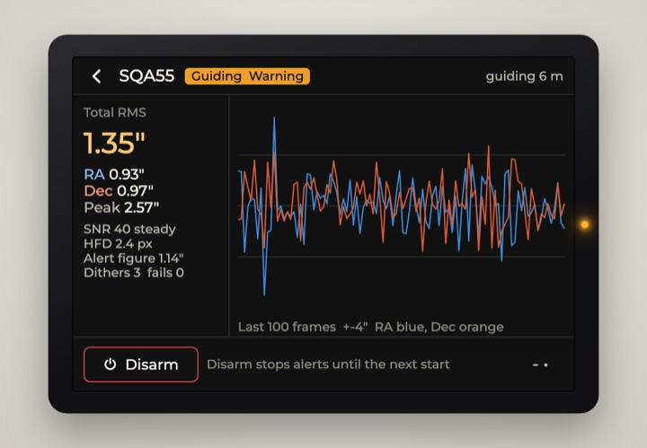
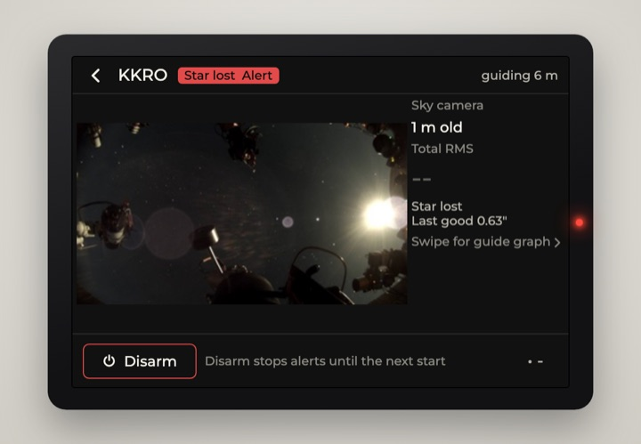

All your rigs on one screen.
An alert only when guiding goes wrong.
Running more than one ASIAIR or N.I.N.A. rig means checking each one in turn to see it's still guiding. Astro Rig Monitor watches them all at once, side by side, and tells your phone when one needs you.
Free and open source. Read-only: it never sends a command to your rigs.


A demo night with four rigs: two guiding well, one with RMS creeping up (warning), one that has lost its guide star (alert), opened on the phone.
Why it's useful with several rigs
All rigs at a glance
Total RMS, RA/Dec, guide-star SNR and a 10-minute trend for every rig, on your phone, tablet or computer. ASIAIR and N.I.N.A. rigs side by side, with no switching between apps or devices.
Alerts only when it matters
RMS too high, star lost, guiding stopped and not back, a rig gone offline. One bad frame never alerts. Free phone alerts through ntfy, or Discord.
Knows a routine pause from a problem
Dithers, autofocus, filter changes, gotos and meridian flips don't set it off. An autofocus or flip that never finishes does.
Quiet when the night's done
A rig disarms itself when its plan finishes or the sun comes up, so you're not woken by a rig that's simply parked.
A report every morning
One page per night: each rig's guiding through the night, every alert, and why each pause happened.
Safe to run on a live plan
It only listens to the guiding events the ASIAIR or PHD2 already broadcasts, so it can't upset a running plan or sequence. Keep using the ASIAIR app or N.I.N.A. as normal.
Works with any ASIAIR, and with PHD2 on its own or driven by N.I.N.A. Remote observatories work too, over Tailscale or another VPN.
On your phone
Add it to your Home Screen and it opens like an app. Tap a rig for its guide graph.

All rigs
A rig in alert

A rig's guide graph and stats
What it tells you
| OK | Guiding, with total RMS below your warning level. |
| WARN | Total RMS above your warning level for about 20 seconds. |
| ALERT | RMS above your alert level; star lost or guiding stopped and not back; a task that's taking too long; settling failing again and again; the rig gone offline. |
You set the levels for each rig. A good start is a warning at half your imaging pixel scale.

A rig's detail page: the last 100 frames with dithers shaded, the stats, and, from the ASIAIR's app port (optional), the target, sub count, filter and last autofocus.
Optional: a desk display
A small touch screen with a warning light, for beside the sofa. The firmware is included for a low-cost ESP32 board.



Or use a tablet, a Raspberry Pi screen or Home Assistant: build your own display.
Install
Run it on a computer that stays on through the night, on the same network as your rigs.
Mac
macOS 13 or later- Download, unzip, and drag it into Applications.
- First time: right-click it, choose Open, then Open again.
- Add your rigs in the setup window and press Save and start.
Which Mac? Apple menu → About This Mac. It lives in the menu bar.
Windows
Windows 10 or 11, 64-bit- Download and run the installer. If Windows warns you, click More info → Run anyway.
- Add your rigs in the setup window and press Save and start.
- Allow it through the firewall on private networks.
It lives in the system tray.
Raspberry Pi or Linux
Raspberry Pi OS, Debian 12+, Ubuntu 24.04+- Paste this into a terminal on the Pi:
curl -fsSL https://raw.githubusercontent.com/dgsgc/astro-rig-monitor/main/tools/install.sh | bash - Open the address it prints on your phone, add your rigs and press Save and start.
Then open it on your phone: the app's menu has Open on Your Phone… with a QR code. Phone alerts use the free ntfy app.